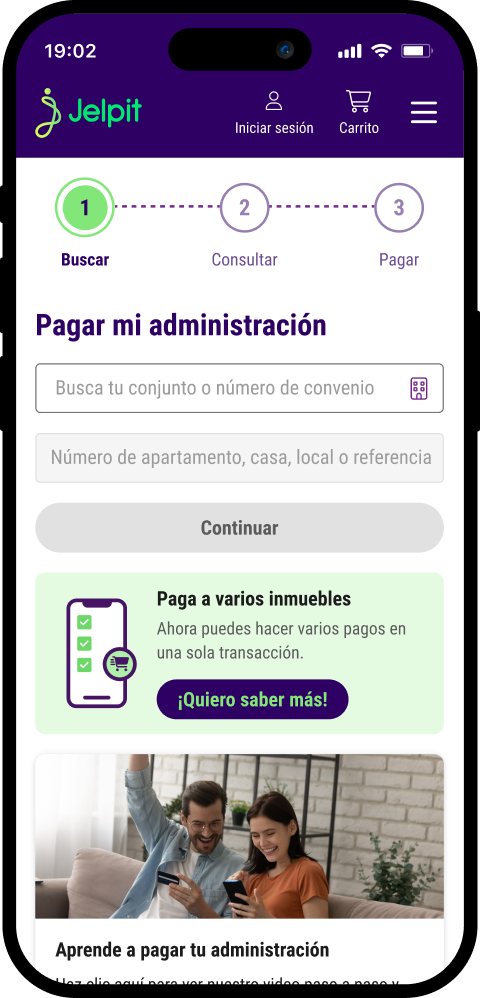
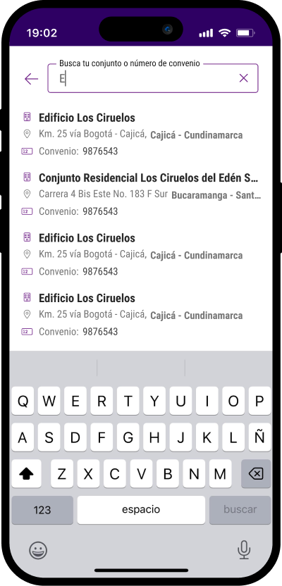
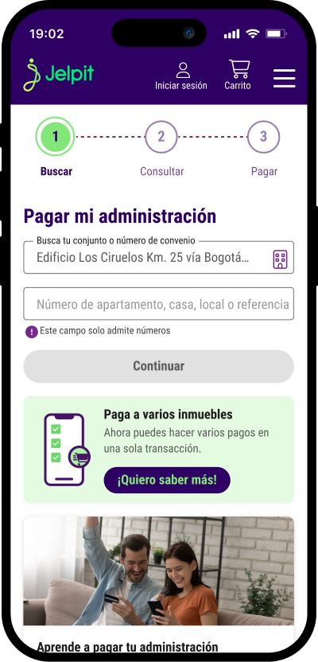
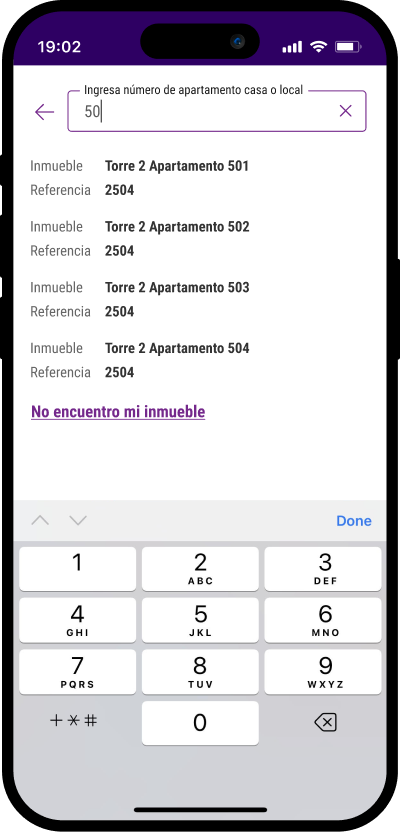
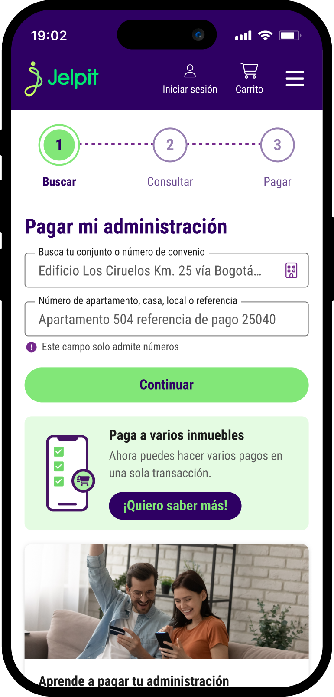
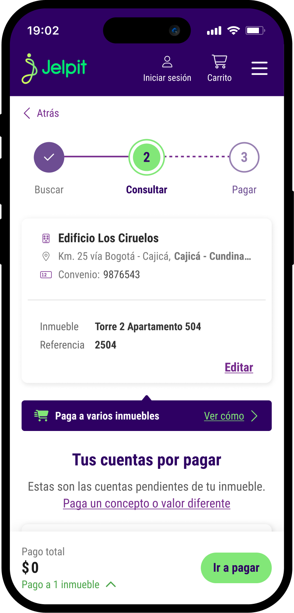
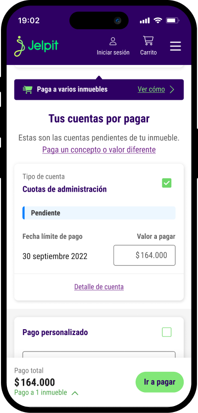
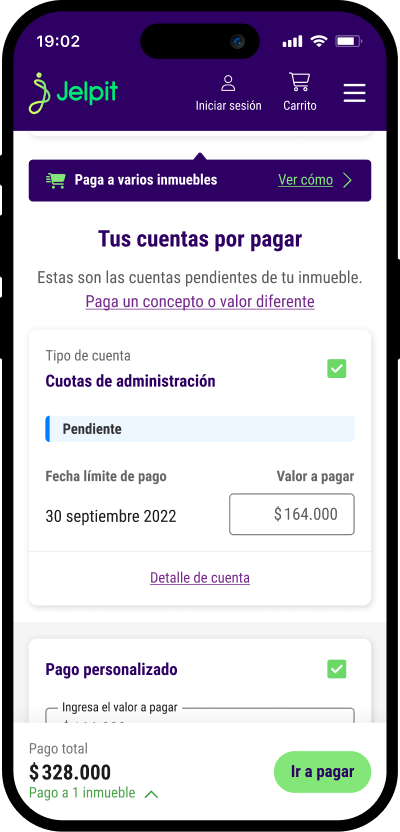
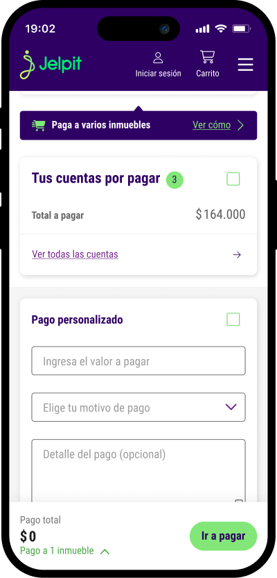
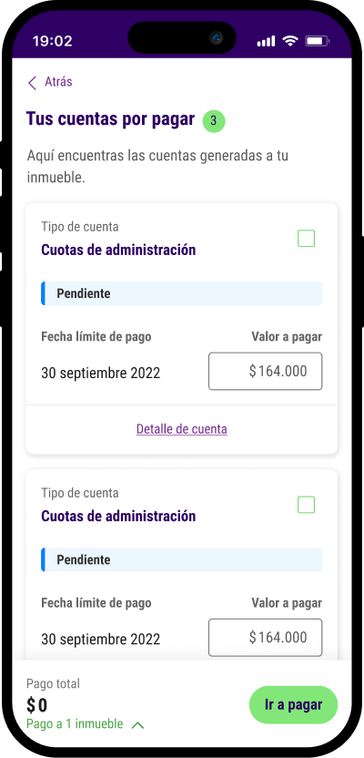

Flujo de pagos rediseñado: -45% en tiempo y arquitectura reutilizable
Tiempo de pago
- 45 %
Tiempo de pago: 2.2 min a 1.2 min
Arquitectura personalizable
Micro-front end reutilizable
Reducción de errores
Mensajes e información clara
El reto
Jelpit Conjuntos había evolucionado como producto — pero su flujo de pago no. La tecnología era obsoleta, impedía implementar el design system actualizado y generaba quejas constantes por lentitud, errores y pasos excesivos. Al mismo tiempo, Davivienda — socio estratégico de Jelpit — exigía mantener un NPS alto como condición del acuerdo comercial. El reto era rediseñar el flujo de pago completamente, sobre una arquitectura moderna y personalizable que pudiera adaptarse a otros clientes y escenarios de negocio.
Qué estaba pasando
El flujo de pago acumulaba problemas estructurales que la investigación y la analítica hacían evidentes:
- Sin buscador dinámico — los usuarios no podían encontrar su conjunto de forma ágil
- Resultados de búsqueda sin información suficiente para resolver ambigüedades de ciudad, dirección o nombre
- Sin pantalla de verificación — los usuarios no podían confirmar ni corregir su información antes de pagar
- Referencias de pago en pantalla separada — generando pagos a inmuebles equivocados
- Pasos excesivos que hacían el proceso lento y frustrante
- Sin adaptabilidad a los distintos flujos de uso de los administradores
- Lenguaje técnico y de negocio que no correspondía a cómo los usuarios nombraban las cosas
- Deuda técnica acumulada que impedía implementar el design system y mejoras de accesibilidad y escalabilidad
Desde el negocio había presiones adicionales:
- Davivienda exigía mantener un NPS alto como condición del acuerdo comercial
- Se necesitaba una arquitectura personalizable para expandir el flujo a otros clientes y escenarios — colegios, asociaciones, arriendos — con posibilidad de adaptar colores y contenidos por marca
Cómo investigamos
Este rediseño se apoyó en más de un año de investigación acumulada y en estudios específicos para este proyecto:
- Seguimiento continuo de datos en Google Analytics, Microsoft Clarity y tableros de Looker y BI para identificar patrones de uso, abandonos y fricciones
- Entrevistas profundas con residentes y administradores — no solo sobre flujos de uso sino sobre todas las problemáticas a las que se enfrentaban en su día a día con el producto
- Jobs To Be Done para entender qué necesitaban lograr los usuarios en cada momento del flujo
- Análisis heurístico del flujo existente
- Investigación externa contratada a Kantar para validar hallazgos
- Tree testing y ejercicios de nomenclatura para definir el lenguaje correcto — por ejemplo, cómo nombrar el número de referencia para abarcar todos los casos: apartamento, casa, local o referencia
- Pruebas de usabilidad en Useberry antes de cualquier implementación
- Pruebas controladas con clientes seleccionados antes del lanzamiento masivo — una marcha blanca para validar la solución en contexto real
Cómo tomamos decisiones
Cada decisión de diseño tuvo un origen claro en la investigación o en los datos:
- Reducir pasos — la analítica mostraba que cada paso adicional aumentaba el abandono
- Agregar pantalla de verificación — las entrevistas revelaron que los errores generaban desconfianza y llamadas al servicio al cliente
- Buscador dinámico con especificación de nombre, dirección, ciudad y número de convenio, para resolver ambigüedades de nombre de conjunto
- Permitir correcciones en cualquier punto del flujo
- Sistema flexible adaptado a los distintos flujos de uso de los administradores
- Lenguaje de los usuarios — validado con tree testing y ejercicios de nomenclatura
- Implementación correcta del Design System — para garantizar consistencia visual, acelerar el desarrollo y construir sobre una base escalable
- Arquitectura de microfront-end personalizable para escalar a otros clientes y marcas
Mi rol
Product Designer responsable del proceso completo — desde la investigación y el análisis de datos hasta el diseño del flujo, el UX Writing y la validación con usuarios. Fui quien identificó y documentó los problemas del flujo existente, lo que derivó en la decisión técnica de migrar a un microfront-end. Trabajé de forma transversal con equipos de negocio, tecnología y el equipo de Davivienda, y acompañé el proceso hasta las pruebas controladas previas al lanzamiento.
La solución
Migramos a una arquitectura de microfront-end sobre Angular, implementamos el Design System correctamente y rediseñamos cada pantalla del flujo basándonos en los hallazgos de la investigación. El objetivo era un flujo más rápido, más claro y personalizable para otros clientes y marcas.
Búsqueda y selección del conjunto y el inmueble
Pantalla inicial — Acciones principales y contexto para iniciar el flujo de pago

Búsqueda y selección de conjunto — Con información suficiente para resolver ambigüedades

Identificación del inmueble — Opciones definidas por la administración, con manejo de errores integrado

Búsqueda por número — Con información completa para reconocer la referencia.

Verificación y confirmación de los datos del conjunto y la referencia de pago
Verificación de los datos en selección — En un primer paso, se verifican los datos del conjunto y la referencia de pago apenas se seleccionan

Verificación de la información en consulta — En un segundo paso, se verifican y se pueden modificar los datos en la pantalla de consulta de pagos

Gestión de cuentas y flexibilidad
Se diseñaron múltiples casos de uso de acuerdo a la información recolectada: con cuentas de cobro, con cuentas equivocadas, sin cuentas de cobro, con descuentos por pronto pago, con descuentos por usuario, con cuentas agrupadas, con pagos diferenciados, etc.
Pago a cuenta de cobro simple

Pago a cuenta de cobro más otro concepto

Cuentas agrupadas más pago personalizado

Detalle de cuentas agrupadas
